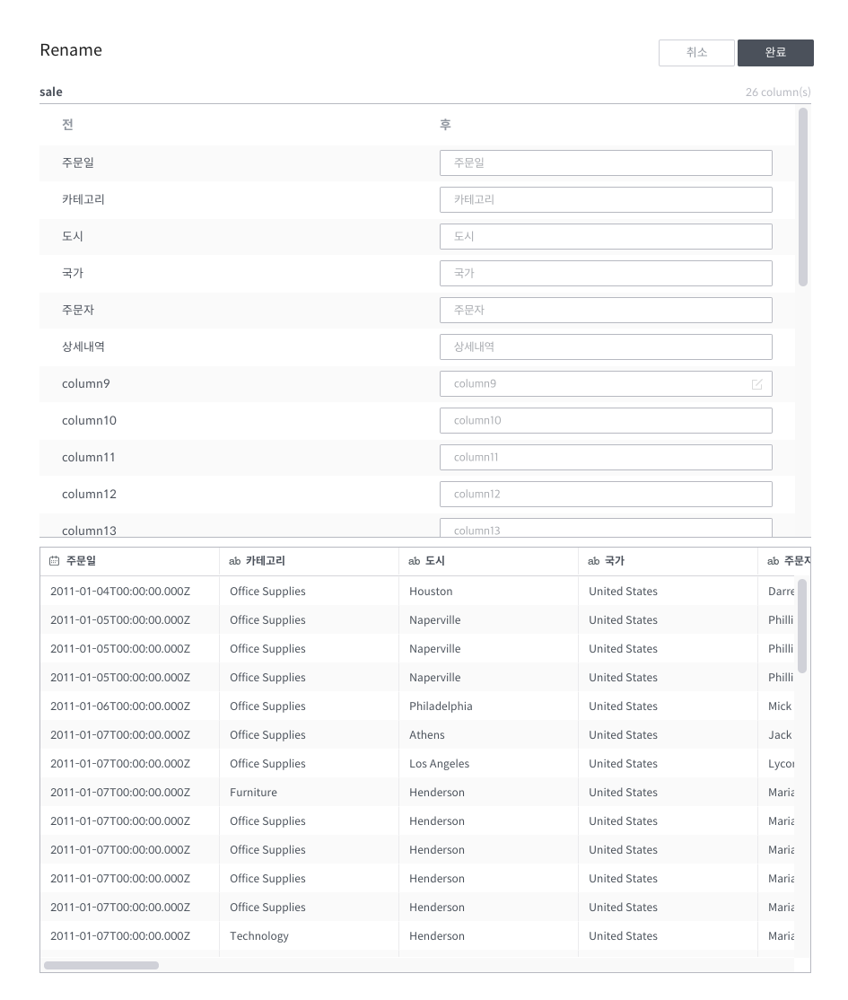
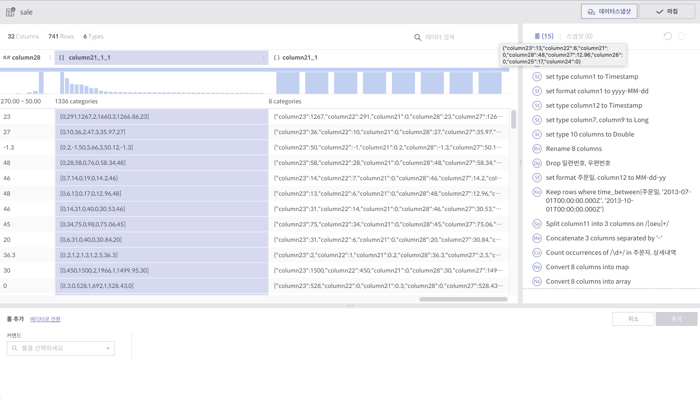

룰의 종류¶
본 절에서는 각 룰을 다음과 같은 항목으로 구분하여 설명합니다.
룰 이름
필수 인자
선택 인자
상세 설명
주의사항
현재 데이터 프리퍼레이션에서 지원하는 룰 종류는 다음과 같습니다.
이러한 룰과 더불어 각종 수식 함수가 제공함으로써, 데이터 프리퍼레이션은 일반적인 데이터 정제에 필요한 대부분의 기능들을 지원하고 있습니다.
header¶
필수 인자: 컬럼명을 담고 있는 행 번호 (1-base) 상세 설명
지정된 행의 내용을 컬럼명으로 설정합니다.
첫 행에 컬럼명이 있는 CSV 파일을 읽어들일 때에 유용합니다.
특별한 설정이 없는 한, 데이터 프리퍼레이션은 자동으로 header를 수행합니다. 자동 적용된 header의 결과를 원치 않는 경우 해당 룰을 삭제하면 되지만, 보통 그런 일은 흔치 않습니다.
settype¶
필수 인자
컬럼: 대상 컬럼 리스트
새로운 타입: Long, Double, String, Boolean, Timestamp 중 택 1
선택 인자
포멧 지정: Timestamp의 경우 format string (Joda time)
상세 설명
선택된 컬럼들의 타입을 바꿉니다.
Type mismatch가 발생해도 룰은 성공하며, type mismatch는 이후 따로 해결해주어야 합니다.
setformat¶
필수 인자
컬럼: 대상 컬럼 리스트
포멧 지정: Jodatime의 포맷 스트링
상세 설명
Timestamp 컬럼의 화면 표시 형식을 바꿉니다.
대상 컬럼이 반드시 Timestamp 타입이어야 합니다.
주의사항
포멧 지정 입력창은 아래처럼 입력에 따라 제시되는 리스트가 변합니다. 원하는 포멧을 앞에서부터 치다보면 리스트에 나오는 후보가 점점 좁혀집니다.

rename¶
필수 인자
컬럼: 대상 컬럼 (1개)
새로운 컬럼 이름: 새로운 이름
상세 설명
선택된 컬럼의 이름을 변경합니다.
2개 이상의 컬럼들에 대해 한번에 rename을 수행하고자 할 때엔 하단 명령 입력창에 있는 전체 컬럼 변경 버튼을 클릭하면 다음과 같은 팝업창이 뜹니다.


replace¶

필수 인자
컬럼: 대상 컬럼 리스트
패턴: 갈아치울 대상 문자열 패턴
상수 문자열인 경우:
'로 감싸져 있는 경우 ('seoul','서울','서울 특별시'등)정규식인 경우:
/로 감싸져 있는 경우 (/[ ,_]+/,/\s+$/등)새로운 값: 새롭게 놓일 문자열 수식
상수 문자열
정규식의 그룹을 이용한 문자열 수식:
$1_$2_$3등
선택 인자
다음 문자 사이 무시: 이 안에 입력된 문자 사이 내용에 대해서는 치환을 하지 않습니다.
모든 항목 일치 여부: 단어의 모든 문자가 일치해야하는지 여부
대소문자 구분 무시: 대소문자를 동일하게 취급할지 여부
상세 설명
선택된 컬럼들에 대하여, 문자열 변환을 수행합니다.
주의사항
새로운 값에는
'이나/를 사용하지 않습니다.새로운 값에 다른 컬럼의 값을 이용할 수 없습니다. replace는 순수히 해당 컬럼 내용안에서의 문자열 변환입니다. (cf. set 룰)
set¶

필수 인자
컬럼: 대상 컬럼 리스트
수식: 대상 컬럼의 값이 될 수식. 다른 컬럼값을 참조할 수 있습니다. (cf. replace 룰)
여러 컬럼을 대상으로 하는 경우,
$col이라고 쓰면 각 컬럼에 대해 변환을 할 때, 그 대상 컬럼을 가리키도록 치환됩니다.즉,
column1,column2에 대해 set 명령을 사용하는 경우,column1에 대해 변환을 할 때엔$col이column1이 되고,column2에 대해 변환을 할 때엔$col이column2가 됩니다.
선택 인자
다음 조건에서만 수행
이 조건을 만족하는 행에 대해서만 set 룰을 적용합니다.
SQL문에서 WHERE과 같다고 생각하면됩니다.
상세 설명
해당 컬럼의 값을 주어진 수식의 결과값으로 대체합니다.
복잡한 수식을 사용하는 경우 고급 편집기를 클릭하면 다음과 같은 팝업창이 뜹니다.

고급 편집기를 활용하면 컬럼의 리스트와 함수의 리스트 및 각 설명, 예시를 보면서 넓은 창에서 수식을 편집할 수 있고, 실제로 룰을 실행하기 전에 수식의 유효성을 체크해볼 수 있습니다.
derive¶
필수 인자
수식: 새로운 컬럼의 값이 될 수식. set 룰과 마찬가지로 다른 컬럼값을 참조할 수 있습니다.
새로운 컬럼 이름
상세 설명
set 룰과 비슷하지만, 어떤 컬럼의 값을 대체하는 것이 아니라 새로운 컬럼을 만들어냅니다.
주의사항
수식에 등장하는 컬럼 중에 제일 마지막 컬럼 뒤로 삽입됩니다.
split¶
필수 인자
컬럼: 대상 컬럼 리스트
패턴: split의 기준이 되는 문자열 수식. replace 룰과 같이 정규식을 허용합니다.
횟수: 몇 개의 컬럼으로 나눌 것인지 여부입니다.
상세 설명
각 행에 대해 주어진 횟수 - 1 만큼 split을 합니다.
컬럼 내용에 패턴이 더 이상 없을 경우 null 값을 가진 컬럼을 만들어냅니다.
주의사항
횟수에 해당하는 개수의 컬럼이 생기게 된다는 것에 유의하세요. (조속히 레이블을 고치겠습니다.)
merge¶
필수 인자
컬럼: 대상 컬럼 리스트
구분자: 컬럼들을 이을 상수 문자열
새로운 컬럼 이름
상세 설명
대상 컬럼들을 구분자로 이어서 새로운 컬럼을 만듭니다.
주의사항
replace 룰도 마찬가지지만,
'로 감싸는 것은 생략할 수 있습니다. 즉,/로도,'로도 감싸지지 않는 문자열이 입력되었을 시, 알아서'로 감싸서 전달되게 되어있습니다.
extract¶
필수 인자
컬럼: 대상 컬럼 리스트
패턴: 추출할 문자열 패턴. replace 룰과 마찬가지로 정규식을 허용합니다.
횟수: 추출할 횟수
선택 인자
다음 문자 사이 무시: 이 안에 입력된 문자 사이 내용에 대해서는 치환을 하지 않습니다.
대소문자 구분 무시: 대소문자를 동일하게 취급할지 여부
상세 설명
패턴에 매치되는 내용으로 새로운 컬럼을 만듭니다.
주의사항
여러 개의 대상 컬럼이 있는 경우, 추출의 결과는 각 컬럼의 뒤로 붙습니다.
countpattern¶
필수 인자
컬럼: 대상 컬럼 리스트
패턴: 찾아낼 문자열 패턴. replace 룰과 마찬가지로 정규식을 허용합니다.
선택 인자
다음 문자 사이 무시: 이 안에 입력된 문자 사이 내용에 대해서는 치환을 하지 않습니다.
대소문자 구분 무시: 대소문자를 동일하게 취급할지 여부
상세 설명
패턴에 매치되는 내용이 몇 군데에 있는지 세어서, 그 숫자로 새 컬럼을 만듭니다.
extract 와 상당히 비슷합니다. 내용을 추출하는 것이 아니라, 그 숫자를 세는 것만 다를 뿐입니다.
주의사항
여러 개의 대상 컬럼이 있는 경우, 추출의 결과는 각각 컬럼의 뒤로 붙습니다.
nest¶
필수 인자
컬럼: 대상 컬럼 리스트
타입: Map 또는 Array
새로운 컬럼 이름
상세 설명
대상 컬럼을 주어진 타입으로 묶습니다.
다음은 각각 Array, Map으로 묶여진 경우입니다.

unnest¶

필수 인자
컬럼: 대상 컬럼 (1개)
선택할 요소: Array의 경우 0-base index, Map의 경우 key값
상세 설명
Array 또는 Map에서 지정된 요소를 빼서 새 컬럼으로 만듭니다.
주의사항
대상 컬럼은 반드시 Array 또는 Map 타입이어야 합니다.
flatten¶
필수 인자
컬럼: 대상 컬럼 (1개)
상세 설명
Array의 각각 원소를 해당 컬럼의 값으로 삼는 행을 만들어냅니다.
주의사항
대상 컬럼은 반드시 Array 타입이어야 합니다.

위와 같이 Array 컬럼에 4개의 원소가 있는 경우, 각 원소의 값에 대해 1개씩 행이 생깁니다. 이 때 대상 Array 컬럼을 제외한 모든 컬럼들의 값은 동일하게 됩니다.

aggregate¶

필수 인자
수식: Aggregation 함수 리스트
그룹화 기준: Group By에 쓰일 컬럼 리스트
상세 설명
그룹화 기준 컬럼들 각 조합에 대해 Group By 연산을 수행한 결과를 새로운 컬럼으로 추가합니다.
각 수식 당 한 컬럼씩 생깁니다. 예를 들어, 평균값과 카운트를 수식으로 지정하였을 경우, 2개의 컬럼이 생깁니다.
현재 지원하는 Aggregation 함수는 다음과 같습니다.
count()
sum(colname)
avg(colname)
min(colname)
max(colname)
주의사항
샘플링된 결과에 대해서만 연산을 수행합니다. 때문에 전체 데이터에 대한 결과, 즉 스냅샷은 달라질 수 있습니다.
count함수 사용시
()를 꼭 붙여야 하는 것에 유의하십시오.count(colname)은 현재 지원하지 않습니다.

pivot¶

필수 인자
컬럼: 피봇 대상 컬럼 리스트
수식: 컬럼의 값이 될 수식 리스트 (Aggregation 함수만 가능)
그룹화 기준: Group By에 쓰일 컬럼 리스트
상세 설명
대상 컬럼들과 그룹화 기준 컬럼들 각 조합에 대해 Group By 연산을 수행하고, 그 결과를 새로운 컬럼값으로 하는 데이터셋을 만듭니다.
각 수식에 대해 컬럼 세트들이 생깁니다. 예를 들어, 평균값과 카운트를 수식으로 지정하였을 경우, 피봇 대상 컬럼들의 값이 결국 10개의 그룹으로 나뉠 경우, 20개의 컬럼이 생겨나게 됩니다.
주의사항
최소 2개의 컬럼에 대한 복합 Group By를 할 때에 사용됩니다. (피봇 대상 1개, 그룹화 기준 1개)
일반적으로 컬럼명이 길어지기 때문에, 뒤이어 전체 rename을 필요로하는 경우가 많습니다.

unpivot¶

필수 인자
컬럼: 컬럼값으로 내릴 대상 컬럼들 리스트
그룹 수: 결과 컬럼 숫자 (기본적으로 1)
상세 설명
선택된 컬럼들에 대해 컬럼 이름과 컬럼의 값을 내용으로 하는 컬럼 2개를 만듭니다. (그룹 수가 1인 경우)
그룹 수가 선택된 컬럼 숫자와 같은 경우, 각 컬럼 이름과 값에 해당하는 컬럼들을 만듭니다. 즉, 10개 컬럼에 대해 그룹 수 10으로 unpivot을 하면, 총 20개 컬럼이 생깁니다.
주의사항
그룹 수가 대상 컬럼 수의 약수인 경우는 곧 지원할 예정입니다.
<그룹 수가 1인 경우>

<그룹 수가 컬럼 수와 같은 경우>

join¶

join은 다른 룰들과는 달리, 별도의 팝업창을 갖습니다.
필수 인자 (팝업에서 선택하거나 입력)
join 대상 데이터셋: 같은 데이터플로우 내의 Wrangled 데이터셋
join 결과로 나올 컬럼들 (토글)
join 키: 여러 개 입력 가능
join 타입: 현재 내부조인만 지원
상세 설명
대상 데이터셋과 연결해서 컬럼들을 만들어 냅니다.
기본적으로 관계형 데이터베이스의 join과 같습니다.
결과보기 버튼으로 실제 룰적용 전에 join 결과를 볼 수 있습니다.
주의사항
결과로 나올 컬럼에 join 키가 꼭 포함되어있어야 합니다.

union¶

union 역시 join처럼 별도의 팝업창을 갖습니다.
필수 인자(팝업에서 선택)
union 대상 데이터셋: 다수 선택가능
상세 설명
지정된 데이터셋의 내용도 함께 처리합니다.
기본적으로 관계형 데이터베이스의 union all과 같습니다.
주의사항
대상 데이터셋은 union을 수행하는 데이터셋과 컬럼명과 타입, 그리고 컬럼 개수가 일치해야합니다.

window¶


필수 인자
수식: Window 함수 리스트
그룹화 기준: 이 그룹안에서 행의 순서가 만들어짐. 없으면 그냥 전체적으로 정렬 기준 적용
정렬 기준: 이 컬럼의 순서로 전후 관계가 만들어짐. 없으면 그냥 데이터가 입력되는 순서
상세 설명
앞의 행, 뒤의 행의 내용을 토대로 수식을 계산해서 컬럼값을 생성합니다.
그룹화 기준내에서 정렬 기준으로 순서를 정합니다.
예를 들어, 위의 예시에서는 주(state)별로 앞뒤 3개씩의 행을 포함해서 평균값을 계산합니다.
화면상에서는 바로 앞에 보인다고 해도, 주가 같지 않으면 더 앞의 행을 보게됩니다.
현재 지원하는 Window 함수는 다음과 같습니다.
row_number()
lead(colname, int)
lag(colname, int)
rolling_sum(colname, int, int)
rolling_avg(colname, int, int)
Window 함수와 더불어 Aggregation 함수도 사용할 수 있습니다.
주의사항
Window 함수 사용시, 인자 수가 부족하거나 한 상황에 대해 적절한 에러메시지가 제공되지 않습니다. 유의하시기 바랍니다.
Window 함수 확장과 더불어 곧 수정될 내용입니다.